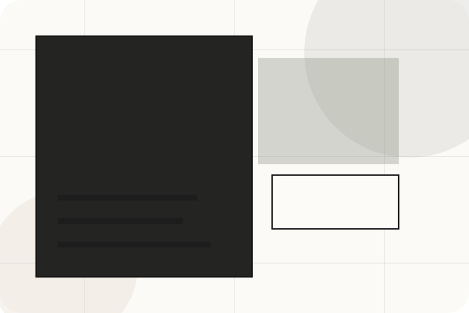

ASH-TRA static portfolio support
Sitemap Page
The footer and this page expose every important route so visitors and crawlers can discover the full static site. The sitemap mirrors the core page matrix, utility pages, and legal routes for transparent navigation.
Use this page for recovery, QA, crawler review, and client handoff. It should be updated whenever a new resource, service page, case page, or legal page is added.